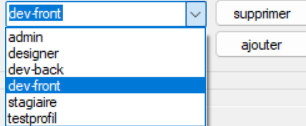
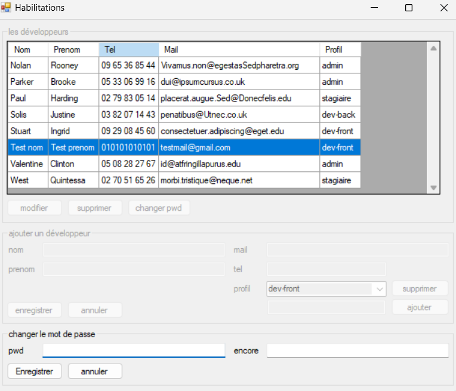
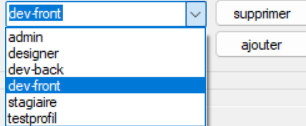
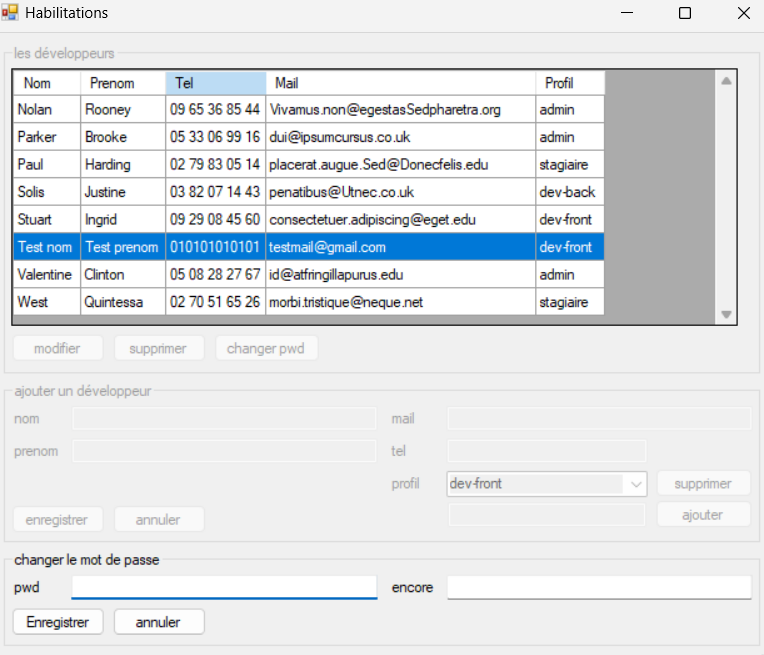

Travaux pratiques - Application Habilitations
2ème année BTS SIO (Septembre 2024)
Ce TP fait suite à ma découverte du langage C# lors de ma première année, ici, j’ai réalisé un projet nommé "Habilitations" pour approfondir mes compétences en C#. L’application permet de gérer une liste de développeurs avec des fonctionnalités d’ajout, modification, suppression et affichage. Chaque développeur possède un nom, prénom, téléphone, email, profil et mot de passe. Le développement s’est déroulé en plusieurs phases : mise en place de l’architecture, ajout de l’authentification, contrôle des mots de passe, création d’un installeur, gestion des logs, amélioration de la qualité du code avec SonarQube, tests unitaires, et enfin une phase de développement piloté par les tests (tests first). Ce projet m’a permis d’appliquer des notions clés en développement, base de données, sécurité et qualité logicielle.
üîß Langages et technologies utilis√©s :
- C#
- MySQL
- Git / GitHub
üìé Documents li√©s :
üîó Liens utiles :
✅ Compétences couvertes :
- - Analyser les objectifs et les modalités d’organisation d’un projet : projet structuré en phases, utilisation d'un cahier des charges autour cette application.
- - Analyse du code : intégration de SonarQube pour suivre la qualité du code et détecter les anomalies.
- - Réaliser les tests d’intégration et d’acceptation d’un service : réalisation de tests unitaires.
- - Déployer un service : création d’un installeur de l’application, intégration de logs, externalisation des configurations.
- - Traiter des demandes concernant les applications : mise en place de fonctionnalités de gestion (CRUD) sur les développeurs, modification du comportement de l’application, ajout de fonctionnalités.
üì∏ Captures d'√©cran de l'application :
 


